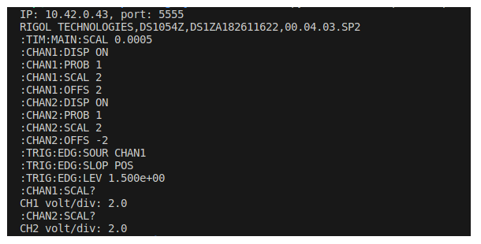

การใช้งานออสซิลโลสโคปและการเขียนโปรแกรมเชื่อมต่อ RIGOL DS1054Z (ผ่านเครือข่าย LAN)#
บทความนี้กล่าวถึง ตัวอย่างการตั้งค่าออสซิลโลสโคป RIGOL DS1054Z เพื่อใช้งานผ่านระบบเครือข่าย Ethernet / LAN และเขียนโปรแกรมเชื่อมต่อโดยใช้โพรโทคอล TCP/IP ตามมาตรฐานของ LXI
Keywords: Rigol DS1054Z, Digital Storage Oscilloscope, LXI, PulseView, SCPI, Python Programming
- อุปกรณ์เครื่องมือวัดและการเชื่อมต่อด้วยโพรโตคอล LXI
- การตั้งค่าใช้งานผ่านเครือข่ายให้กับอุปกรณ์ RIGOL DS1054Z
- การใช้งาน PulseView
- ตัวอย่างโค้ด Python: การเชื่อมต่อกับสโคป
- ตัวอย่างโค้ด Python: การอ่านข้อมูลไฟล์ .PNG จากสโคป
- ตัวอย่างโค้ด Python: การตั้งค่าพารามิเตอร์และอ่านค่าของช่องสัญญาณ
- ตัวอย่างโค้ด Python: การอ่านข้อมูลสัญญาณจากสโคปและแสดงรูปกราฟ
▷ อุปกรณ์เครื่องมือวัดและการเชื่อมต่อด้วยโพรโตคอล LXI#
เครื่องมือวัดและทดสอบทางไฟฟ้า (Test & Measurement Instruments) ที่มีการใช้งานอยู่ในปัจจุบัน อย่างเช่น ออสซิลโลสโคป ("สโคป") แบบดิจิทัล (Digital Oscilloscopes) เครื่องกำเนิดสัญญาณ (Function Generators) และแหล่งจ่ายแรงดันไฟฟ้าแบบดีซี (DC Power Supplies) หลายรุ่นจากหลายบริษัท สามารถเชื่อมต่อและใช้งานได้ผ่าน Ethernet/LAN จึงทำให้ผู้ใช้สามารถควบคุมและตั้งค่าการทำงานอุปกรณ์เหล่านี้ได้จากระยะไกลได้ โดยไม่จำเป็นต้องใช้งานผ่านแผงควบคุมที่อยู่ด้านหน้าของตัวอุปกรณ์ (Front Control Panel)
LXI (LAN eXtensions for Instrumentation) เป็นโพรโตคอลหนึ่งสำหรับการสื่อสารกับอุปกรณ์เครื่องมือวัดและทดสอบด้วยวิธี Ethernet/LAN จัดทำโดยองค์กรที่มีชื่อว่า LXI Consortium เริ่มต้นใช้งานในปีค.ศ. 2005 และมีการอัปเดตมาตรฐานอีกหลายครั้ง ข้อดีของการใช้ LAN คือ ความเร็วในการสื่อสารข้อมูล
LXI รองรับการใช้งานในระบบเครือข่าย TCP/IP ผ่าน Ethernet/LAN แบ่งเป็นสองกรณีคือ
- VXI-11 และ HiSLIP (ตามมาตรฐานของ VXIbus Consortium)
- Raw TCP/IP Socket
โดยปรกติแล้ว การเขียนโปรแกรมควบคุมและใช้งานเครื่องมือวัดและทดสอบทางไฟฟ้า
(Programmatic Control of T & M Instruments)
มักจะใช้ API (Application Programming Interface)
ที่ได้มีการกำหนดให้เป็นมาตรฐานโดย IVI (Interchangeable Virtual Instruments) Foundation
เช่น VISA (Virtual Instrument Software Architecture)
และมีไลบรารีสำหรับการเขียนโค้ดภาษา Python เช่น
อุปกรณ์หลายรุ่นของบริษัท Rigol มีพอร์ต RJ45 สำหรับการเชื่อมต่อผ่านระบบเครือข่ายได้และรองรับการใช้งาน LXI เช่น Rigol DS1000Z Series Digital Storage Oscilloscopes (DSOs)
หากต้องการเขียนโปรแกรมสื่อสารกับอุปกรณ์ด้วยโพรโตคอล LXI ด้วยวิธี Raw TCP/IP และใช้คำสั่งในรูปแบบที่เรียกว่า SCPI (Standard Commands for Programmable Instruments) ก็ทำได้โดยใช้วิธี Network Socket Programming และใช้ภาษาคอมพิวเตอร์ได้หลายภาษา เช่น C/C++, Python, Java, MATLAB และ C# เป็นต้น รูปแบบของคำสั่ง SCPI สามารถศึกษาได้จากเอกสารต่อไปนี้
ตัวอย่างไลบรารีสำหรับภาษา Python ที่เกี่ยวข้องกับการใช้งาน Rigol DS1000Z เช่น
- github.com/pklaus/ds1054z
- github.com/lumascet/pyrigol
- github.com/AlexZettler/Rigol1000z
- github.com/jeanyvesb9/Rigol1000z
ถ้าไม่ต้องการเขียนโปรแกรมควบคุม ผู้ใช้สามารถใช้ซอฟต์แวร์ Open Source อย่างเช่น PulseView เชื่อมต่อและใช้งานได้เช่นกัน
▷ การตั้งค่าใช้งานผ่านเครือข่ายให้กับอุปกรณ์ RIGOL DS1054Z#
ขั้นตอนการดำเนินการ
- เปิดใช้งานอุปกรณ์ RIGOL DS1054Z
- เชื่อมต่อสายวัด (สายโพรบ) จำนวน 2 ช่องสัญญาณ และใช้สัญญาณทดสอบ (Test Signal) จากตัวสโคปสำหรับการตรวจสอบความพร้อมในการใช้งานของสายโพรบทั้งสอง
- เชื่อมต่อสาย LAN ที่พอร์ต RJ45 แบ่งเป็น 2 กรณี
- เชื่อมต่อกับพอร์ต RJ45 ของคอมพิวเตอร์ผู้ใช้ โดยไม่ผ่านอุปกรณ์ Network Switch / Router
- เชื่อมต่อกับพอร์ต RJ45 ผ่านอุปกรณ์ Network Switch / Router และอยู่ใน LAN เดียวกับคอมพิวเตอร์ผู้ใช้
รูป: ตัวอย่างสัญญาณทดสอบ 2 ช่องสัญญาณ
ในบทความนี้จะใช้วิธีแรกคือ การใช้สาย LAN เชื่อมต่อระหว่างสโคปกับคอมพิวเตอร์ผู้ใช้โดยตรง คอมพิวเตอร์ผู้ใช้ แบ่งเป็น 2 กรณีคือ ระบบปฏิบัติการ Windows 10 และ Ubuntu 22.04 LTS คอมพิวเตอร์ของผู้ใช้เชื่อมต่อกับอินเทอร์เน็ตผ่าน WiFi และแต่ใช้ LAN เชื่อมต่อกับสโคป
คำแนะนำ: ผู้ใช้ควรตั้งค่าการใช้งานในคอมพิวเตอร์ เพื่อแชร์อินเทอร์เน็ตผ่าน WiFi สำหรับอุปกรณ์อื่นที่เชื่อมต่อผ่าน LAN ให้สามารถใช้งานได้ก่อนทำขั้นตอนถัดไป
- กดปุ่ม "Utility" บนแผงควบคุมด้านหน้าของสโคป
- ทำคำสั่งจากเมนู "IO Setting > LAN Conf."
- ทำคำสั่ง "Initialize" เพื่อตั้งค่าการใช้งานผ่าน LAN โดยอัตโนมัติ แล้วเลือก "OK"
รูป: การทำคำสั่งจากเมนู "IO Setting > LAN Conf."
รูป: การทำคำสั่ง Initialize เพื่อตั้งค่าการใช้งาน LAN Setting ซึ่งจะได้รับหมายเลข IP และค่าอื่น ๆ ที่เกี่ยวข้องกับการใช้งานในระบบเครือข่าย
รูป: กดปุ่ม OK หลังจากการทำคำสั่ง Initialize
เมื่อทำขั้นตอนได้ถูกต้องแล้ว จะมองเห็นหมายเลข IP ของสโคป และให้ลองใช้คำสั่ง
ping ทดลสอบการเชื่อมต่อกับสโคป ถ้าทำได้สำเร็จ สโคปก็พร้อมสำหรับการใช้งานผ่าน LAN
ในรูปตัวอย่าง สโคปได้รับหมายเลข IP ตรงกับ 10.42.0.43
จากคอมพิวเตอร์ Ubuntu 22.04 ที่มีหมายเลข IP ตรงกับ 10.42.0.1
รูป: ตัวอย่างการทำคำสั่ง ping จากคอมพิวเตอร์ Ubuntu
การแชร์อินเทอร์เน็ตสำหรับ Windows 10
- ให้ไปที่เมนู Windows > Settings > Networks & Internet > WiFi > Network and Sharing Center
- คลิกเลือก WiFi ที่กำลังใช้งานเชื่อมต่อกับอินเทอร์เน็ต
- เลือก Wi-Fi Properties > Sharing > Internet Connection Sharing และอนุญาตให้แชร์การเชื่อมต่อได้
รูป: การตั้งค่าเพื่อแชร์อินเทอร์เน็ตสำหรับ Windows 10
รูป: ตัวอย่างการตั้งค่าการใช้งานผ่านเครือข่ายเมื่อเชื่อมต่อกับคอมพิวเตอร์ผู้ใช้ Windows 10
รูป: ตัวอย่างการทำคำสั่ง ping จากคอมพิวเตอร์ Windows
รูป: การแชร์อินเทอร์เน็ตสำหรับ Ubuntu
▷ การใช้งาน PulseView#
ให้ดาวน์โหลดโปรแกรมและติดตั้งใช้งาน PulseView ในคอมพิวเตอร์ของผู้ใช้ และลองเชื่อมต่อกับสโคป
เมื่อเปิดใช้งานซอฟต์แวร์ PulseView
- เปลี่ยนการเชื่อมต่อกับอุปกรณ์จาก "Demo device" ให้เป็น "Rigol DS (rigol-ds)"
- ตั้งค่าหมายเลข IP ของสโคปที่ต้องการเชื่อมต่อ (และหมายเลขพอร์ต) ให้ถูกต้อง
- ตรวจสอบการเชื่อมต่อไปยังสโคป (กดปุ่ม "Scan for devices using drier above")
- ตั้งค่าพารามิเตอร์สำหรับ Trigger Condition ของสโคป เช่น
- Frame Limit: 1
- Time Base: 500 usec
- Trigger Source: CH1
- Trigger Slope: r (riging edge)
- เลือกช่องสัญญาณ CH1 และตั้งค่าก่อนการเปิดใช้งาน
- ตัวคูณของสายโพรบ Probe Factor: 1x
- การเลือก Input Coupling: DC
- ตั้งค่า Volt/Div: 1V
- กดปุ่ม RUN เพื่ออ่านข้อมูลจากสโคป
- ตั้งค่าการแสดงรูปคลื่นสัญญาณ
- ทดลองใช้ช่องสัญญาณ CH1 และ CH2
รูป: การตั้งค่าก่อนการเชื่อมต่อจาก PulseView ไปยังสโคป
รูป: การเชื่อมต่อจาก PulseView ไปยังสโคป (เลือกใช้โพรโตคอล Raw TCP)

รูป: ตัวอย่างการเพิ่ม Vertical Cursors สำหรับการวัดความกว้างของช่วงเวลา
รูป: การตั้งค่าพารามิเตอร์สำหรับ CH1
รูป: การแสดงรูปคลื่นสัญญาณโดยใช้ CH1 และ CH2
รูป: การเปลี่ยนขนาดของสัญญาณสำหรับการแสดงผล
รูป: การแสดงรูปคลื่นสัญญาณ CH1 และ CH2
แนะนำให้ศึกษาเพิ่มเติมจากบทความ: "การใช้งาน RIGOL DS1054Z + PulseView เพื่อการบันทึกและวิเคราะห์สัญญาณแอนะล็อก-ดิจิทัล
เอกสารที่เกี่ยวข้องกับการส่งคำสั่งและตอบกลับจากสโคปสำหรับ RIGOL DS1000Z Series สามารถดูได้จาก "RIGOL Programming Guide (December 2015) - MSO1000Z/DS1000Z Series Digital Oscilloscopes"
▷ ตัวอย่างโค้ด Python: การเชื่อมต่อกับสโคป#
ตัวอย่างแรกสำหรับการเขียนโค้ด Python เป็นการเปิดใช้งาน Network Socket
(TCP/IP) เพื่อเชื่อมต่อไปยังสโคป และส่งคำสั่ง *IDN? ซึ่งเป็น SCPI Command
แล้วรอรับข้อความตอบกลับซึ่งเป็นข้อมูลเกี่ยวกับอุปกรณ์สโคป
เช่น ชื่อผู้ผลิต ชื่อรุ่นหรือโมเดล หมายเลข Serial Number ของตัวเครื่อง เป็นต้น
รูป: คำสั่ง *IDN? และคำอธิบาย
import socket
import sys
# Specify the instrument's IP address
instr_ip = '10.42.0.43'
# Specify the instrument's LXI port
instr_port = 5555
try:
host = (instr_ip,instr_port)
sock = socket.create_connection(host, timeout=1.0)
except Exception as ex:
print(ex)
sys.exit(-1)
def send_cmd(sock, cmd, read_response=True):
sock.sendall(cmd.encode())
if not read_response:
return None
resp_data = b''
try:
while True:
chunk = sock.recv(4096)
if not chunk:
break
resp_data += chunk
except TimeoutError as ex:
pass
return resp_data
print ( f'IP: {instr_ip}, port: {instr_port}')
# Use the following LXI/SCPI command to identify the instrument.
cmd = '*IDN?\n'
response = send_cmd( sock, cmd )
resp = response.decode().strip()
names = ["Vendor", "Model", "SN", "Firmware Version"]
print(f"Instrument Response: {resp}")
values = resp.split(',')
for k,v in dict(zip(names,values)).items():
print (f'{k}: {v}')
if sock:
print('Socket closed...')
sock.close()
▷ ตัวอย่างโค้ด Python: การอ่านข้อมูลไฟล์ .PNG จากสโคป#
ตัวอย่างถัดไป สาธิตการส่งคำสั่ง :DISP:DATA? ON,OFF,PNG
ไปยังสโคป เพื่อให้ส่งข้อมูลกลับมาแล้วบันทึกลงไฟล์ .PNG
ซึ่งจะได้รูปกราฟิกเหมือนที่ปรากฎบนหน้าจอ LCD ของสโคป
รูป: คำอธิบายการใช้คำสั่ง :DISP:DATA? ตามเอกสาร "RIGOL Programming Guide
import socket
import sys
import time
# Specify the instrument's IP address
instr_ip = '10.42.0.43'
# Specify the instrument's LXI port
instr_port = 5555
try:
host = (instr_ip,instr_port)
sock = socket.create_connection(host, timeout=1.0)
except Exception as ex:
print(ex)
sys.exit(-1)
def send_cmd(sock, cmd, read_response=True):
sock.sendall(cmd.encode())
time.sleep(0.25)
if not read_response:
return None
resp_data = b''
try:
while True:
chunk = sock.recv(4096)
if not chunk:
break
resp_data += chunk
except TimeoutError as ex:
pass
return resp_data
print ( f'IP: {instr_ip}, port: {instr_port}')
# Use the following LXI/SCPI command to identify the instrument.
cmd = '*IDN?\n'
print( send_cmd( sock, cmd ).decode().strip() )
def write_screen_capture(sock, filename='capture.png'):
response = send_cmd(sock, ':DISP:DATA? ON,OFF,PNG\n')
raw_data = response[11:]
# save as a PNG image file
f = open(filename, 'wb')
f.write(raw_data)
f.close()
print("PNG file saved...")
return raw_data
write_screen_capture(sock)
if sock:
print('Socket closed...')
sock.close()
รูป: ตัวอย่างไฟล์รูป .PNG ที่ได้จากสโคป
▷ ตัวอย่างโค้ด Python: การตั้งค่าพารามิเตอร์และอ่านค่าของช่องสัญญาณ#
ตัวอย่างถัดไปสาธิตการส่งคำสั่งไปยังสโคป เพื่อตั้งค่าการใช้งานช่องสัญญาณ CH1 และ CH2
ตัวอย่างคำสั่งสำหรับช่อง CH1 มีดังนี้
:CHAN1:DISP ONเปิดใช้งานการวัดสัญญาณช่อง CH1:CHAN1:PROB 1ตั้งค่าโพรบสำหรับช่อง CH1 ให้เป็น 1x:CHAN1:SCAL 2.0ตั้งค่า Volt/Div สำหรับ CH1 ให้เป็น 2V/Div:CHAN1:OFFS 2.0ตั้งค่าระดับของสัญญาณ (Vertical Offset) สำหรับ CH1 ให้เลื่อนสูงขึ้นมา 2V จากระดับกลางจอภาพ
ตัวอย่างคำสั่งสำหรับช่อง CH2 มีดังนี้
:CHAN2:DISP ONเปิดใช้งานการวัดสัญญาณช่อง CH2:CHAN2:PROB 1ตั้งค่าโพรบสำหรับช่อง CH2 ให้เป็น 1x:CHAN2:SCAL 2.0ตั้งค่า Volt/Div สำหรับ CH2 ให้เป็น 2V/Div:CHAN2:OFFS -2.0ตั้งค่าระดับของสัญญาณ (Vertical Offset) สำหรับ CH2 ให้เลื่อนลงมา 2V จากระดับกลางจอภาพ
ตัวอย่างคำสั่งสำหรับการตั้งค่า Time Base
:TIM:MAIN:SCAL 500.0e-6ตั้งค่า Time/Div ให้เท่ากับ 500usec
ตัวอย่างคำสั่งสำหรับการตั้งค่าเงื่อนไข Trigger
:TRIG:EDG:SOUR CHAN1เลือกใช้ Edge Type และอินพุตเป็นช่อง CH1:TRIG:EDG:SLOP POSเลือกใช้ Rising Edge Type:TRIG:EDG:LEV 1.5ตั้งค่า Trigger Level ให้เท่ากับ 1.5V
รูป: ตัวอย่างของคำสั่งที่เกี่ยวข้องกับการตั้งค่าพารามิเตอร์ของช่องสัญญาณ
import socket
import sys
import time
import numpy as np
import matplotlib.pyplot as plt
# Specify the instrument's IP address
instr_ip = '10.42.0.43'
# Specify the instrument's LXI port
instr_port = 5555
try:
host = (instr_ip,instr_port)
sock = socket.create_connection(host, timeout=0.5)
except Exception as ex:
print(ex)
sys.exit(-1)
def send_cmd(cmd, read_response=True, dly=0.3):
global sock
sock.sendall(cmd.encode())
time.sleep(dly)
if not read_response:
return None
resp_data = b''
try:
while True:
chunk = sock.recv(1024)
if not chunk:
break
resp_data += chunk
except TimeoutError as ex:
pass
return resp_data
print ( f'IP: {instr_ip}, port: {instr_port}')
# Use the following LXI/SCPI command to identify the instrument.
cmd = '*IDN?\n'
print( send_cmd( cmd ).decode().strip() )
def set_channel(chan, probe=1.0, volts_per_div=1.0, offset_divs=0.0):
global sock
cmd = f':CHAN{chan}:DISP ON'
print(cmd)
send_cmd( cmd, False )
cmd = f':CHAN{chan}:PROB {probe}'
print(cmd)
send_cmd( cmd, False )
cmd = f':CHAN{chan}:SCAL {volts_per_div}'
print(cmd)
send_cmd( cmd, False )
cmd = f':CHAN{chan}:OFFS {offset_divs*volts_per_div}'
print(cmd)
send_cmd( cmd, False )
def set_timebase(time_per_div=1e-3 ):
real_value_str = f'{time_per_div:0.3}'
cmd = f':TIM:MAIN:SCAL {real_value_str}'
print(cmd)
send_cmd( cmd, False )
def set_trigger_edge(chan=1, pos_edge_type=True, level=0.0):
global sock
level = f'{level:0.3e}'
cmd = f':TRIG:EDG:SOUR CHAN{chan}'
print(cmd)
send_cmd( cmd, False )
edge = ['NEG','POS'][pos_edge_type]
cmd = f':TRIG:EDG:SLOP {edge}'
print(cmd)
send_cmd( cmd, False )
cmd = f':TRIG:EDG:LEV {level}'
print(cmd)
send_cmd( cmd, False )
time_per_div = 500e-6
volt_per_div = 2
probe = 1
set_timebase( time_per_div )
set_channel( 1, probe, volt_per_div, 1)
set_channel( 2, probe, volt_per_div, -1)
set_trigger_edge( 1, True, 1.5 )
def get_scale(channel=1):
global sock
cmd = f':CHAN{channel}:SCAL?'
print(cmd)
resp = send_cmd( cmd )
return float(resp.strip())
print( 'CH1 volt/div:', get_scale(1) )
print( 'CH2 volt/div:', get_scale(2) )
# Close the socket connection
if sock:
sock.close()

รูป: ตัวอย่างข้อความเอาต์พุตจากการทำงานของโค้ด
▷ ตัวอย่างโค้ด Python: การอ่านข้อมูลสัญญาณจากสโคปและแสดงรูปกราฟ#
ตัวอย่างถัดไปสาธิตการใช้ส่งคำสั่งไปยังสโคป เพื่ออ่านข้อมูลสำหรับช่องสัญญาณ CH1 แล้วนำมาแสดงผลโดยใช้ Matplotlib ข้อมูลแต่ละตัวมีขนาดหนึ่งไบต์ มีจำนวนข้อมูล Waveform Samples ที่ใช้สำหรับการวาดรูปกราฟ เท่ากับ 1200
import socket
import sys
import time
import numpy as np
import matplotlib.pyplot as plt
# Specify the instrument's IP address
instr_ip = '10.42.0.43'
# Specify the instrument's LXI port
instr_port = 5555
try:
host = (instr_ip,instr_port)
sock = socket.create_connection(host, timeout=0.5)
except Exception as ex:
print(ex)
sys.exit(-1)
def send_cmd(cmd, read_response=True, dly=0.3):
global sock
sock.sendall(cmd.encode())
time.sleep(dly)
if not read_response:
return None
resp_data = b''
try:
while True:
chunk = sock.recv(1024)
if not chunk:
break
resp_data += chunk
except TimeoutError as ex:
pass
return resp_data
print ( f'IP: {instr_ip}, port: {instr_port}')
# Use the following LXI/SCPI command to identify the instrument.
cmd = '*IDN?\n'
print( send_cmd( cmd ).decode().strip() )
def get_normal_mode_params(chan):
global sock
cmd_list = [
'WAV:XINC?',
'WAV:XOR?',
'WAV:XREF?',
'WAV:YINC?',
'WAV:YOR?',
'WAV:YREF?',
]
cmd = f':WAV:SOUR CHAN{chan}'
print(cmd)
send_cmd( cmd, False )
params = []
for cmd in cmd_list:
print(cmd)
resp = send_cmd( cmd )
value = float( resp.strip() )
params.append( value )
return params
def get_normal_mode_waveform_data(chan):
global sock
cmd_list = [
':WAV:MODE NORM',
':WAV:FORM BYTE',
':WAV:DATA?'
]
cmd = f':WAV:SOUR CHAN{chan}'
print(cmd)
send_cmd( cmd, False )
for cmd in cmd_list:
print(cmd)
resp = send_cmd( cmd, False )
# Receive and decode the waveform data
data = sock.recv(2048).strip()
data = data[11:] # Remove the first 11 header bytes
return data
params = get_normal_mode_params(1)
data = get_normal_mode_waveform_data(1)
waveform = np.frombuffer(data, dtype=np.uint8)
print( params )
x_inc, x_orig, x_ref = tuple(params[0:3])
y_inc, y_orig, y_ref = tuple(params[3:])
# Calculate time values for each sample
time_values = (np.arange(len(waveform)) * x_inc) + x_orig + x_ref
# Calculate voltage values for each sample
voltage_values = (waveform - y_orig - y_ref) * y_inc
# Plot the waveform data
plt.plot(time_values, voltage_values)
plt.title("Waveform in NORMAL Mode")
plt.xlabel("Time (s)")
plt.ylabel("Voltage (V)")
plt.grid(True)
plt.show()
# Close the socket connection
if sock:
sock.close()
ถ้าต้องการทำให้เส้นกราฟดูเรียบมากขึ้น (Smoothing)
ก็สามารถใช้ตัวกรองแบบ Moving Average Filter
โดยเพิ่มโค้ดต่อไปนี้ ก่อนใช้คำสั่ง plt.plot()
# Function to apply a simple moving average filter
def moving_average(data, window_size):
return np.convolve(data, np.ones(window_size)/window_size, mode='valid')
# Set the window size for the moving average filter
moving_window_size = 5
# Apply the moving average filter
voltage_values = moving_average(voltage_values, moving_window_size)
time_values = time_values[moving_window_size-1:]
รูป: ตัวอย่างรูปกราฟที่ได้จากสโคป (ขวามือ: มีการใช้ Moving Average Filter)

รูป: ตัวอย่างรูปกราฟที่ได้จากสโคป (ใช้เครื่องกำเนิดสัญญาณสำหรับ Sine และ Triangular Wave แอมพลิจูด 5Vpp ความถี่ 1kHz เป็นสัญญาณทดสอบให้สโคปช่อง CH1 ตามลำดับ)
▷ กล่าวสรุป#
การเรียนรู้เกี่ยวกับวงจรไฟฟ้าและอิเล็กทรอนิกส์ เกี่ยวข้องกับการวัดและทดสอบทางไฟฟ้า มีการใช้เครื่องมือและอุปกรณ์ที่เกี่ยวข้อง อุปกรณ์หลายรุ่นสามารถรองรับการเขียนโปรแกรมควบคุมได้ ดังนั้นการเขียนโปรแกรมด้วยภาษาคอมพิวเตอร์อย่างเช่น Python จึงเป็นอีกหนึ่งกิจกรรมที่ผู้เรียนควรได้มีโอกาสศึกษาและฝึกทักษะ
บทความนี้นำเสนอตัวอย่างการใช้งานออสซิลโลสโคปรุ่น RIGOL DS1054Z โดยเชื่อมต่อกับคอมพิวเตอร์ของผู้ใช้ด้วยสาย LAN และใช้ซอฟต์แวร์ PulseView เป็น GUI สำหรับการใช้งานฟังก์ชันพื้นฐานของสโคป และมีตัวอย่างการเขียนโปรแกรมด้วยภาษา Python เพื่อตั้งค่าการใช้งานสโคป การวัดสัญญาณและการแสดงข้อมูลสำหรับรูปคลื่นสัญญาณที่ได้จากสโคป
This work is licensed under a Creative Commons Attribution-ShareAlike 4.0 International License.
Created: 2024-01-08 | Last Updated: 2024-01-11